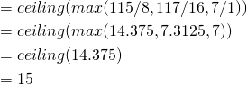

Pre-implemented Modules - Part I¶
- “If you were plowing a field, which would you rather use: two strong oxen or 1024 chickens?”
This tutorial has two parts. In this first part, we illustrate how you can create pre-implemented modules tailored to fit your architecture. In the second part of this tutorial, we show how the modules can be used and replicated as part of a design. At a high level, we will complete three tasks in Part I:
1. Design Utilization Analysis: Examine a synthesized PicoBlaze module and identify its footprint.
2. Architecture Pattern Analysis: Identify the best instance patterns for our PicoBlaze module.
3. PBlock Selections: Create a set of pblocks for implementing our pre-implemented PicoBlaze.
Background¶
Often times when trying to accelerate an application on an FPGA, a specific computation or routine is parallelized and reused many times. However, the conventional FPGA compilation flow may not always take full advantage of this optimization opportunity. One of RapidWright’s key features is the ability to preserve, replicate and reuse placed and routed circuitry in the form of a pre-implemented module.
For the sake of simplicity and ease of implementation for this tutorial, consider the PicoBlaze. The PicoBlaze is an 8-bit programmable micro-controller provided by Xilinx (see block diagram below, Figure 1-1 from UG129, p.8)):
{kind=link}
The PicoBlaze is a small module that consumes 1 Block RAM and ~20 CLBs. In this tutorial we will examine how to create a reuseable, pre-implemented PicoBlaze to construct a programmable processing overlay on a Xilinx VU3P device.
Getting Started¶
For convenience, we have provided a synthesized, out-of-context PicoBlaze design as a starting point DCP. This was built using the reference RTL for PicoBlaze available from Xilinx.com. To get started, let’s do the following:
Open a terminal and create a new directory called
picoblaze.
mkdir picoblaze
cd picoblaze
Download
picoblaze_synth.dcpto your newpicoblazedirectory and open it in Vivado.
vivado picoblaze_synth.dcp
1. Design Utilization Analysis¶
Once the design has been loaded in Vivado, let’s get the utilization report by choosing Reports->Report Utilization... then click OK at the window prompt. A report window similar to the one below will open:
{kind=link}
From this report we can analyze the synthesized resources used by the PicoBlaze. As expected, 1 block RAM is consumed, with 115 LUTs, 117 flip flops and 7 CARRY8 blocks. In the UltraScale architecture, each SLICE/CLB contains 8 LUTs, 16 flip flops and 1 CARRY8 block. Therefore the minimum number of SLICEs needed for the PicoBlaze is:
So, in the absolute best case, we could squeeze a PicoBlaze into 15 UltraScale SLICEs. To attempt this, we would create a pblock (area constraint) that would force the placer to only use 15 SLICEs and 1 Block RAM tile. A block RAM tile is 5 SLICEs tall in the UltraScale architecture, so we would need 3 nearby columns of SLICEs in order to make a compact rectangle. If we tried to use 2 SLICE columns instead of three, our SLICE footprint height would be 8 (ceiling(15/2)) which would not stride well with the 5 SLICE height of the block RAM.
To create the pblock, run the following Tcl constraints:
create_pblock pblock_1
resize_pblock pblock_1 -add {SLICE_X27Y60:SLICE_X29Y64 RAMB18_X2Y24:RAMB18_X2Y25 RAMB36_X2Y12:RAMB36_X2Y12}
add_cells_to_pblock pblock_1 -top
set_property CONTAIN_ROUTING 1 [get_pblocks pblock_1]
Note that we also use the CONTAIN_ROUTING property on the pblock of the PicoBlaze. This will ensure that the implementation is more amenable to relocation (can be more densely packed) later. Without this attribute, the routing will not be very reusable as it will be allowed to spread out far around the rectangle of the pblock. Once the pblock is created, it should look like this:
{kind=link}
We will also need to add a timing constraint to push implementation to get the best performance possible. In order to push the tools, we should be choose a target frequency that will push the tools just beyond their capacity to achieve timing closure. To begin, we’ll add a 400MHz clock constraint and also provide a skew estimation target for the clock buffer to provide a more accurate timing estimation:
create_clock -period 2.5 -name clk -waveform {0.000 1.25} [get_ports clk]
set_property HD.CLK_SRC BUFGCTRL_X0Y2 [get_ports clk]
By running place_design we can gauge the feasibility of using this footprint size for implementation (spoiler… this will not fit). The placer will report the errors similar to the following:
ERROR: [Place 30-488] Failed to commit 4 instances:
processor/reset_lut/LUT6 with block Id: 119 (LUT) at SLICE_X85Y150
processor/reset_lut/LUT6 with block Id: 119 (LUT) at SLICE_X85Y150
processor/reset_lut/LUT6 with block Id: 119 (LUT) at SLICE_X85Y150
processor/stack_loop[0].lsb_stack.stack_muxcy_CARRY4_CARRY8 with block Id: 134 (CARRY) at SLICE_X85Y150
It turns out the logic is packed too tightly into the area. Another way to gauge logic density would be to check the pblock statistics by selecting the pblock in Vivado by running the Tcl command:
select_objects [get_pblocks pblock_1]
Then choosing the Statistics tab of Pblock Properties, which would have something similar to that below:
{kind=link}
A quick analysis shows that we are attempting to use ~96% of the LUTs in that area which is unlikely to place correctly. Again, since BRAM tiles are stacked vertically, we must grow horizontally to ensure that we can step and repeat without blocking access to other BRAMs with used SLICEs. Using the mouse, you can stretch/grow the pblock by grabbing the edge of the pblock shape and pushing it out. Alternatively, you could run the following Tcl command:
resize_pblock pblock_1 -add {SLICE_X26Y60:SLICE_X29Y64 RAMB18_X2Y24:RAMB18_X2Y25 RAMB36_X2Y12:RAMB36_X2Y12} -remove {SLICE_X27Y60:SLICE_X29Y64 RAMB18_X2Y24:RAMB18_X2Y25 RAMB36_X2Y12:RAMB36_X2Y12} -locs keep_all
To validate our new footprint, we can run the Tcl command:
place_design
again to see if we can get things to fit. This time, Vivado should successfully place the design.
2. Architecture Pattern Analysis¶
With a feasible pblock shape, we can now examine the architectural patterns that will lead to the highest number of compatible places this instance of a PicoBlaze could be placed. Xilinx architectures are column-based, meaning that every tile or resource type is the same for a column of the device layout. Consider the device floorplan view below where major tile types have been highlighted:
{kind=link}
Tiles of the same type have all of the same logic and local interconnect and are repetitive in their respective columns. The main constraint for the PicoBlaze is a block RAM and we can leverage RapidWright to help us analyze the fabric to find the most repeated tile column patterns adjacent to block RAMs. To do this, in our terminal open the RapidWright Python interpreter by running:
java com.xilinx.rapidwright.util.RapidWright
Then in the terminal we can use a class called TileColumnPattern to analyze the fabric and create a map of all the tile patterns in the device. We can do this by running:
device = Device.getDevice("xcvu3p-ffvc1517-2-i")
colMap = TileColumnPattern.genColumnPatternMap(device)
After a few seconds it will create a map where the keys are a sequence of tile type names (a tile column pattern) and values are a list of fabric tile column indices where the keyed tile column pattern begins. As a simple example, we can filter the map down to a pattern of 1 BRAM to find out how many BRAM columns exist in the device:
filtered = list(filter(lambda e: TileTypeEnum.BRAM in e.getKey() and e.getKey().size() == 1, colMap.entrySet()))
print filtered
The output should look like this:
[[BRAM]=[75, 97, 137, 193, 268, 331, 340, 396, 471, 534, 571, 594]]
In this example, we have a tile column pattern length of 1, a BRAM tile. The BRAM appears in tile columns indices 75, 97, 137, … as shown in the image below:
{kind=link}
Note that the tile column numbers appear much higher than what would be expected based on the number of visible columns. This is expected as there are several tile columns not necessarily shown in the Vivado GUI, but RapidWright is able to filter and account for the non-visible tiles. Now, for our pattern, we need to filter the map down to only include those keys that:
Have 1 BRAM column
Have 4 SLICE (CLB) columns
To do this, we can run the following code that will print out the patterns we are interested in and sort them by most number of instances first:
filtered = list(filter(lambda e: TileTypeEnum.BRAM in e.getKey() and not TileTypeEnum.DSP in e.getKey() and e.getKey().size() == 5, colMap.entrySet()))
filtered.sort(key=lambda x: x.getValue().size(), reverse=True)
from pprint import pprint
pprint(filtered)
The output should look like this:
[[CLEM, CLEL_R, BRAM, CLEL_R, CLEM]=[94, 134, 265, 328, 337, 468, 531, 568],
[CLEL_R, CLEM, CLEL_R, BRAM, CLEL_R]=[93, 131, 262, 334, 465],
[CLEL_R, CLEL_R, BRAM, CLEL_R, CLEM]=[70, 188, 391],
[CLEM, CLEL_R, CLEL_R, BRAM, CLEL_R]=[68, 186, 389],
[CLEL_R, CLEM, CLEL_R, CLEL_R, BRAM]=[65, 183, 386],
[CLEL_R, BRAM, CLEL_R, CLEL_R, CLEM_R]=[593],
[CLEM_R, CLEL_R, BRAM, CLEL_R, CLEL_R]=[591],
[CLEL_R, BRAM, CLEL_R, CLEM, CLEL_R]=[330],
[CLEM, CLEL_R, CLEM, CLEL_R, BRAM]=[129],
[BRAM, CLEL_R, CLEM, CLEL_R, BRAM]=[331],
[CLEL_R, CLEM_R, CLEL_R, BRAM, CLEL_R]=[588],
[BRAM, CLEL_R, CLEL_R, CLEM_R, CLEL_R]=[594]]
Our first pattern match ([CLEM, CLEL_R, BRAM, CLEL_R, CLEM]) is the most common with 8 instances in the fabric (we can determine this by there being 8 indices in the value array). To help visualize the pattern, here is the first instance (index 94) outlined in the previous floorplan view above with the highlighted tiles:
{kind=link}
The second match is a juxtaposition of the first pattern and covers the same columns (note the indices are very close to those of the first). The third, forth and fifth are also juxtapositions of each other but cover a unique set of BRAM columns not covered and one of them will cover 3 more unique BRAM columns. Therefore, the final BRAM column 594, can be covered by the 6th, 7th, 11th or 12th pattern. For this tutorial, we will use the following three patterns:
[CLEM, CLEL_R, BRAM, CLEL_R, CLEM]=[94, 134, 265, 328, 337, 468, 531, 568]
[CLEL_R, CLEL_R, BRAM, CLEL_R, CLEM]=[70, 188, 391]
[CLEL_R, CLEM_R, CLEL_R, BRAM, CLEL_R]=[588]
3. PBlock Selections¶
Now that we have identified the tile column patterns for our PicoBlaze to be implemented, we must select actual locations on the fabric to produce our replicate-able implementation. A few architectural considerations to take into account when deciding the set of pblocks to use for an implementation are:
Laguna tiles: In multi-SLR devices, some SLICEs along the top and bottom clock region rows are replaced with SLR-crossing resources called Laguna tiles. These tiles cause discontinuities in the regularity of the fabric and can require special handling when creating pre-implemented modules. To best handle them, special instantiations in the neighborhood of laguna tiles will be needed to achieve coverage in those regions.
Device edge: Around the edge of a device or SLR, the regular routing patterns have U-turn interconnect. These U-turns actually make routing easier around the edge of the device, however, if you hope to create a pre-implemented module, they must be a separate implementation if the pre-implemented module is to include routing.
Clock region edge: Another routing edge case relates to clock region edges. If timing is especially critical, some routes, even though a pblock using
CONTAIN_ROUTING=1at the edge of the clock region is turned on, can have side loads that differ from other instances that can be just enough larger to missing timing if a pre-implemented module is created at a non-edge location. In Vivado, these side loads can be seen by clicking the settings (gear icon) at the top right of the device window and turning onDevice->Nets->Used Stubas shown in the screenshot below.
{kind=link}
An example of these stubs (side loads) can be seen in a PicoBlaze implementation seen in the image below:
{kind=link}
As this PicoBlaze instance moves around the fabric, if the used stubs ever cross a clock region boundary, their timing will be increased slightly and can cause the pre-implemented module to close timing at a slightly lower frequency (0 to 5%). To avoid this problem, one can pre-implement the replicated circuit at both the top and bottom edges of a clock region so that the worst case timing is already factored in. The top or bottom implementation can then be used throughout the middle of a clock region without affecting its timing characteristics negatively.
Heterogeneous architectures can become an obstacle to relocatability, however, with the proper pblock selection, full coverage can be achieved. For simplicity of this tutorial, we will work around these issues by ignoring clock region timing edge effects and not using areas next to Laguna and SLR edges. Ultimately, we must do the following to create re-usable pblocks:
Decide on the number of instances required for the desired coverage
Identify the proper origin of the pblock(s)
Correctly calculate the pblock ranges by capturing all resource coordinate systems
To make things simple, we will only use three pblocks to achieve complete coverage in the center three clock region rows.
Next, we can use the Vivado Device view of an already open instance of the PicoBlaze design to help us visually locate our pblock origins.
For our first pblock, we can select the bottom of a middle clock region with an instance of the first pattern:
[CLEM, CLEL_R, BRAM, CLEL_R, CLEM]=[94, 134, 265, 328, 337, 468, 531, 568]
The first instance column is 94, meaning the pattern begins with tile types CLEM in column 94, for example, in RapidWright we can query the device for a tile in that column:
device.getTile(1,94)
Which returns:
CLEM_X9Y299
Note
Notice that we used a row index of 1 (0 is the edge of the device) but that the Y coordinate is 299. The row/column coordinate system has an origin at the top left (North West) corner of the device whereas the X/Y coordinate system.
As we expect, the tile type is CLEM. We must now create a pblock that captures the pattern on the edge of a middle clock region. By subtracting 60 (the number of SLICEs in a clock region), we arrive at tile CLEM_X9Y239. We can select this tile in Vivado by running the Tcl command:
select_objects [get_tiles CLEM_X9Y239]
then using the toolbar button for pblock creation, we can use the mouse to create an outlined rectangular region that includes 20 SLICEs and 1 RAMB36 as shown in the screenshot below:
{kind=link}
A confirmation window will pop up, make sure all the Grids are selected then click OK. By using this technique, we can be assured to get the proper ranges for both BRAM and SLICEs in our pblock. To get the created pblock ranges, run the Tcl command:
get_property GRID_RANGES [get_selected_objects]
This should print:
RAMB36_X1Y47:RAMB36_X1Y47 RAMB18_X1Y94:RAMB18_X1Y95 SLICE_X13Y235:SLICE_X16Y239
This is our first pblock. We can repeat this process for the other two patterns to get the following list of pblocks:
RAMB36_X1Y47:RAMB36_X1Y47 RAMB18_X1Y94:RAMB18_X1Y95 SLICE_X13Y235:SLICE_X16Y239
RAMB36_X0Y47:RAMB36_X0Y47 RAMB18_X0Y94:RAMB18_X0Y95 SLICE_X7Y235:SLICE_X10Y239
RAMB36_X11Y47:RAMB36_X11Y47 RAMB18_X11Y94:RAMB18_X11Y95 SLICE_X157Y235:SLICE_X160Y239
Now store these three pblocks in a text file (or download the one we have already created) called picoblaze_pblocks.txt in our picoblaze directory. With these three pblocks, we are ready to move on to full implementation of these modules. Please continue with Pre-implemented Modules - Part II.